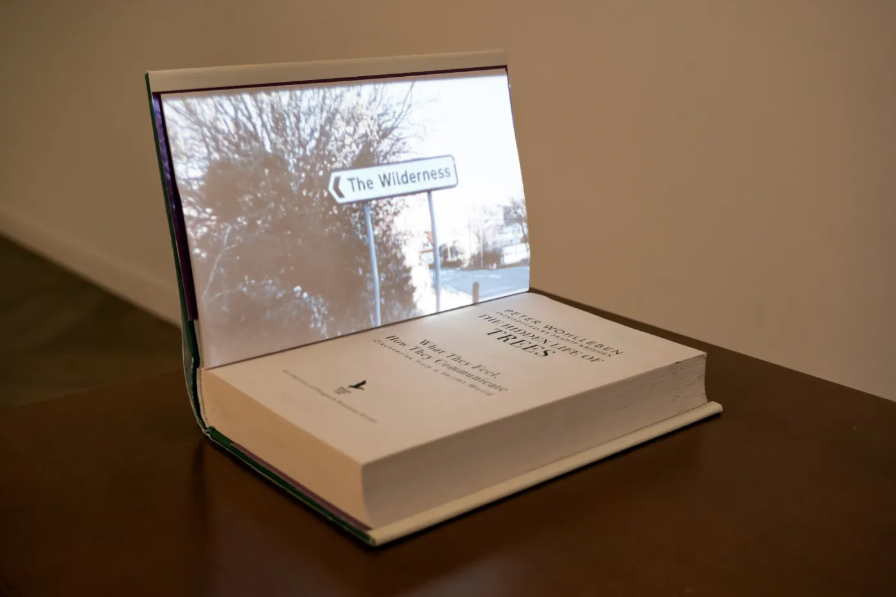

Bárbara S. Barroso
Bárbara S. Barroso is a visual artist, filmmaker and researcher. Her work spans film,
installation, performance and writing, moving between reality and fiction.
Bárbara trabaja con cine analógico y video instalación, así como con la performance y la
escritura. Su práctica se sitúa en la intersección entre cine, instalación y pensamiento
ecológico. Vive y trabaja en Barcelona.

Activa JavaScript para ver la web completa (obra, noticias, publicaciones y diario).